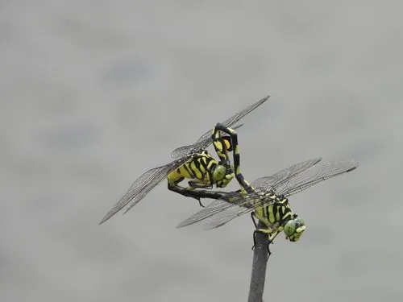

昆虫 · 动物界
大团扇春蜓 Sinictinogomphus clavatus

腹部末端呈扇状膨大的大型蜻蜓，黄黑相间，飞行力强，常在河流和池塘边巡逻，是春蜓中的醒目种类。
- 分类
- 门节肢动物门纲昆虫纲目蜻蜓目科春蜓科属团扇春蜓属
- 栖息环境
- 河流、池塘、水库和沟渠边缘，常在水面上空巡逻
- 地理分布
- 中国大部分地区、日本和朝鲜半岛
- 保护级别
- 暂无评估；湿地指示物种
物种志
大团扇春蜓成虫体长约 6–7 cm，翅展约 9–10 cm，是体型较大的蜻蜓。体色黄绿与黑色相间，腹部各节有黄色斑纹，腹部末端明显膨大，呈团扇状，因此得名；翅透明，翅基有黑褐色斑，复眼绿色。
它生活在河流、池塘、水库和沟渠边缘，成虫飞行力强，常在水面上空和岸边来回巡逻，捕食蚊蝇、蛾类和其他飞虫，雄虫有领域性，会驱赶入侵者。雌虫点水产卵，幼虫生活在泥沙和水草间，捕食水生昆虫和小鱼。大团扇春蜓分布于中国大部分地区、日本和朝鲜半岛，是春蜓科中较常见的种类，可作为湿地和河流环境质量的指示物种。
形态与习性
- 食性捕食蚊蝇、蛾类等飞虫；幼虫捕食水生小动物
- 体长约 6–7 cm，翅展约 9–10 cm
- 识别腹部末端呈扇状膨大，黄黑相间
- 习性飞行力强，常在水面上空来回巡逻
- 分布中国大部分地区、日本和朝鲜半岛
趣味知识
- 大团扇春蜓腹部末端像一把小扇子，因此得名。
- 它体型大、飞行有力，是河边很容易注意到的蜻蜓。
- 春蜓的幼虫生活在泥沙中，是水里的捕食者。